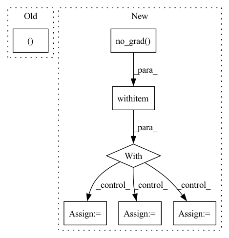

Pattern ID :1100
Before Change
y1_grad, y2_grad = grad_outputs
y1, y2 = Reversible.outputs
mask = ctx.mask
x1, x2 = ctx.function.reverse(y1, y2, mask)
Reversible.outputs = (x1, x2)
with torch.enable_grad():
if not x1.requires_grad:
After Change
gy1 = ctx.layer.g_block(y1)
gy1.backward(y2_grad)
with torch.no_grad() :
x2 = y2 - gy1
x1_grad = y1_grad + y1.grad
y1.grad = None
with torch.enable_grad():
x2.requires_grad = True
In pattern: SUPERPATTERN
Frequency: 5
Non-data size: 7
Instances Fragment ID: 5561936
Project Name: rick-mccoy/reformer-pytorch
Commit Name: ba4ca176c189afc7a5ab76d9aea596478ea128a8
Time: 2020-01-15
Author: rickmccoy3141@gmail.com
File Name: model/reversible.py
M Class Name: Reversible
N Class Name: Reversible
M Method Name: backward(1)
N Method Name: backward(1)
M Parent Class: Function
N Parent Class: Function
M File Name: model/reversible.py
N File Name: model/reversible.py
M Start Line: 26
M End Line: 36
N Start Line: 24
N End Line: 49
Before Change
print("model loaded")
dataiter = iter(dataloader)
images, labels = dataiter.next()
for i, data in enumerate(dataloader, 0):
inputs, labels = dataAfter Change
total_pred = {classname: 0 for classname in classes}
// again no gradients needed
with torch.no_grad() :
for data in dataloader:
inputs, labels = data
inputs, labels = inputs.to(device), labels.to(device)
outputs = model(inputs)
_, predictions = torch.max(outputs, 1)
// collect the correct predictions for each class
for label, prediction in zip(labels, predictions):
if label == prediction:
correct_pred[classes[label]] += 1
total_pred[classes[label]] += 1
// print accuracy for each class Fragment ID: 5562133
Project Name: loretoparisi/hf-experiments
Commit Name: 286971f578836b95fec5d7123b3b23cd5fa01603
Time: 2021-05-11
Author: loretoparisi@gmail.com
File Name: src/mlpvision/train.py
M Class Name: AnonimousClass
N Class Name: AnonimousClass
M Method Name: test(5)
N Method Name: test(4)
M Parent Class:
N Parent Class:
M File Name: src/mlpvision/train.py
N File Name: src/mlpvision/train.py
M Start Line: 156
M End Line: 176
N Start Line: 158
N End Line: 192
Before Change
queries_per_block = min(L, 1024//k)
threads = k * queries_per_block
blocks = ((L*k)//threads) + C + 1
query_map = torch.ones((N, H, blocks ), dtype=torch.int32).cuda() * L
blocks_map = torch.ones((N, H, blocks), dtype=torch.int32).cuda() * -1
_, sorted_group_indices = torch.sort(groups, descending=True, dim=-1)
After Change
else:
// Allocate bookkeeping parameters to facilitate the kernel
with torch.no_grad() :
Q_pb = 16
block_counts = (counts + Q_pb - 1) // Q_pb
block_counts = block_counts.int()
block_counts_cumsum = block_counts.view(-1).cumsum(-1).view(N, H, C).int()
indx_maps = torch.ones(
(block_counts.sum(), 4),
device=Q.device,
dtype=torch.int32
)
counts_cumsum = counts.cumsum(-1).int()
total_blocks = block_counts.sum().item()
// Actually perform the dot product
ClusteredSparseDotProduct.dot[device.type]( Fragment ID: 5562066
Project Name: idiap/fast-transformers
Commit Name: ac1fd6316f59b56faa3b4e9236810d4e97ed5b15
Time: 2020-11-25
Author: avyas@idiap.ch
File Name: fast_transformers/sparse_product/__init__.py
M Class Name: ClusteredSparseDotProduct
N Class Name: ClusteredSparseDotProduct
M Method Name: forward(7)
N Method Name: forward(7)
M Parent Class: torch.autograd.Function
N Parent Class: torch.autograd.Function
M File Name: fast_transformers/sparse_product/__init__.py
N File Name: fast_transformers/sparse_product/__init__.py
M Start Line: 185
M End Line: 201
N Start Line: 164
N End Line: 208
Before Change
images = images.view(self.batch_size, -1)
// initialize random noise
z = torch.rand((self.batch_size, 100 ))
real_labels = Variable(torch.ones(self.batch_size)).to(self.device)
fake_labels = Variable(torch.zeros(self.batch_size)).to(self.device)
After Change
}
self.logger.log_losses(info, generator_iter)
with torch.no_grad() :
fake_images = self.G(z)[:self.number_of_images]
real_images = images[:self.number_of_images]
// discriminate real images and fake images
fake_labels = self.D(fake_images).flatten()
real_labels = self.D(images).flatten()
info = {
"real_images": real_images.cpu().detach().numpy(),
Fragment ID: 5562185
Project Name: luzhixing12345/anime-wgan
Commit Name: 0a8816f8a7e456f3393ccf2f0468adecf03b24b3
Time: 2022-05-09
Author: luzhixing12345@163.com
File Name: model/GAN.py
M Class Name: GAN
N Class Name: GAN
M Method Name: train(2)
N Method Name: train(2)
M Parent Class: BasicGAN
N Parent Class: BasicGAN
M File Name: model/GAN.py
N File Name: model/GAN.py
M Start Line: 42
M End Line: 128
N Start Line: 113
N End Line: 199
Before Change
with torch.no_grad():
model.eval()
pout = model(feats)
loss, wer = sb.compute_cost_wer(pout, phn, [wav_len, phn_len])
losses["loss"].append(loss.detach())
losses["wer"].append(wer.detach())
After Change
phn, predictions, stats = losses["wer_stats"]
)
elif mode == "test":
with torch.no_grad() :
model.eval()
pout = model(feats)
predictions = filter_ctc_output(
predictions, blank_id=sb.compute_cost.blank_index
)
refs = zip(id, phn)
hyps = zip(id, predictions)
details_by_utt = edit_distance.wer_details_by_utterance(refs, hyps)
losses["wer_details"].extend(details_by_utt)
Fragment ID: 5561947
Project Name: speechbrain/speechbrain
Commit Name: 4c504abf68fef69963a2fe3bc31386936365e967
Time: 2020-04-08
Author: aku.rouhe@aalto.fi
File Name: recipes/ASR_CTC/TIMIT/VGG2_BLSTM_MLP/experiment.py
M Class Name: AnonimousClass
N Class Name: AnonimousClass
M Method Name: neural_computations(6)
N Method Name: neural_computations(5)
M Parent Class:
N Parent Class:
M File Name: recipes/ASR_CTC/TIMIT/VGG2_BLSTM_MLP/experiment.py
N File Name: recipes/ASR_CTC/TIMIT/VGG2_BLSTM_MLP/experiment.py
M Start Line: 72
M End Line: 79
N Start Line: 61
N End Line: 102